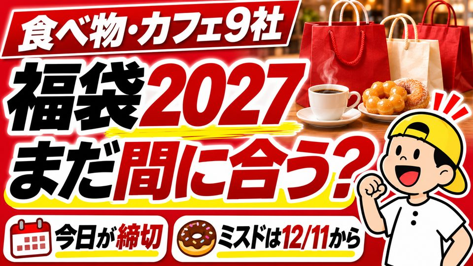
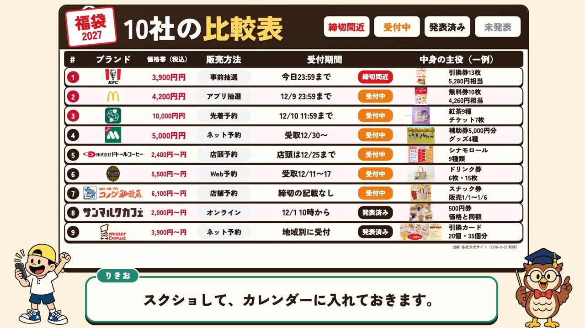
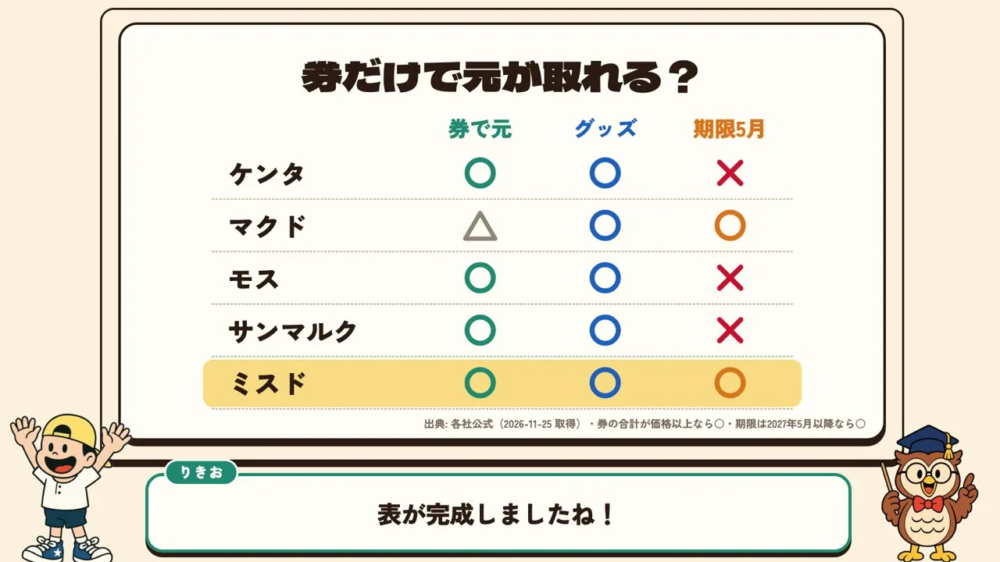
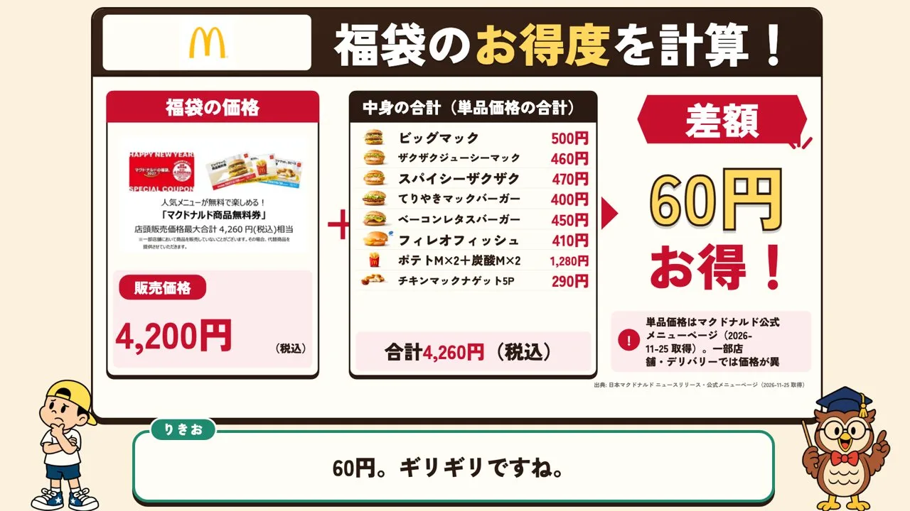
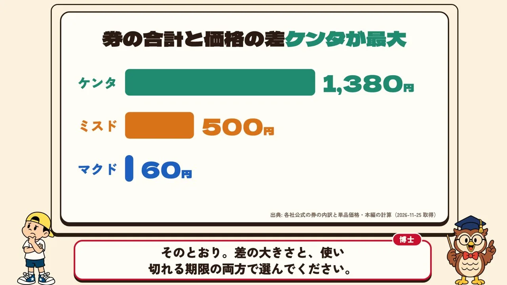
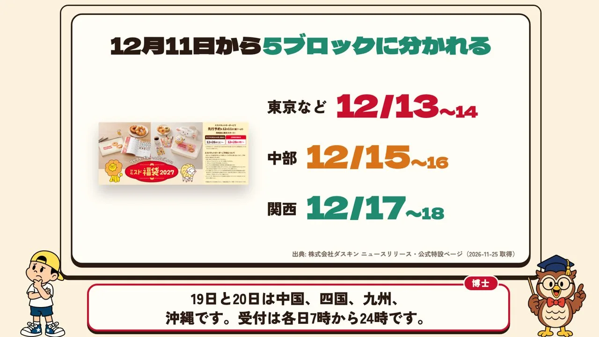
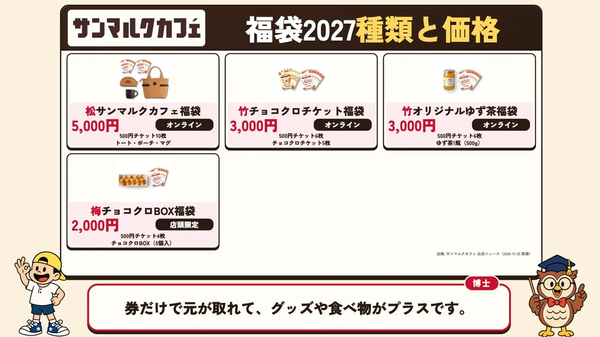
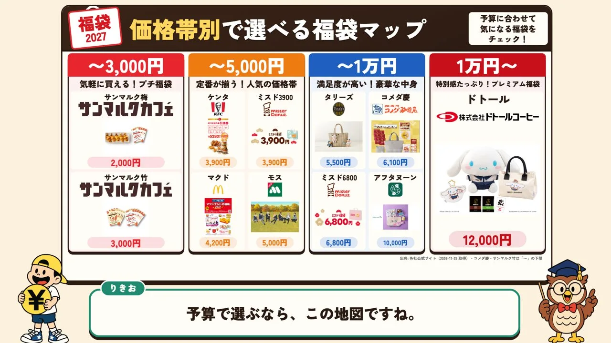
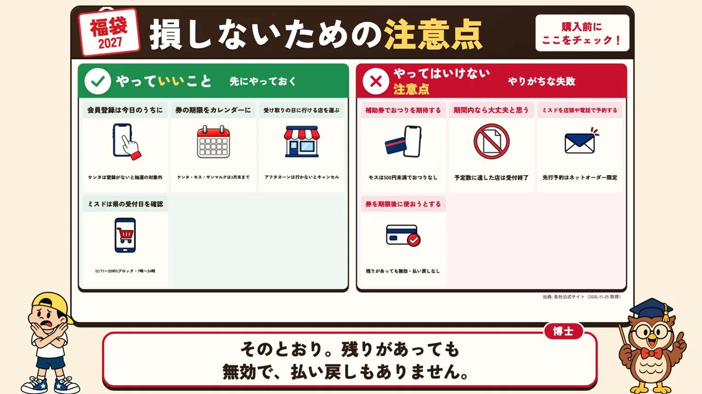

福袋2027のうち、カフェと食べ物の9社は2026年11月26日からでも申し込めます。ケンタッキーの事前抽選は11月26日23時59分まで、アフタヌーンティーの店頭受取予約は11月26日12時から、サンマルクカフェのオンライン販売は12月1日10時から、ミスタードーナツの先行予約は12月11日からです。この記事では9社の価格・中身・申込み期限と、引換券やチケットだけで福袋の価格に届くかどうかを、公式に単品価格がある品だけで計算した結果をまとめました（2026年11月25日時点の各社公式発表）。

▶ この記事の内容を動画で見る（お金の総合チャンネル）01福袋2027 カフェ・食べ物9社の申込み期限一覧

締切が近い順に並べると次のとおりです。タリーズとコメダは、公式ページに全国共通の締切日が書かれていません。
| 社 | 価格（税込） | 申込み方法 | 受付期間 |
|---|---|---|---|
| ケンタッキー | 3,900円 | 事前抽選（KFCモバイルオーダー会員） | 11月13日9:00〜11月26日23:59 |
| ドトール | 2,400円〜12,000円 | 店頭予約（数量限定・店舗により予約できる商品が異なる） | 10月30日〜12月25日 |
| マクドナルド | 4,200円 | 公式アプリで抽選 | 11月24日14:00〜12月9日23:59 |
| アフタヌーンティー | 10,000円 | 店頭受取予約（先着）・配送 | 11月26日12:00〜12月10日11:59 |
| モスバーガー | 5,000円 | ネット特別予約 | 11月25日15:00〜12月24日 |
| タリーズ | 5,500円・10,000円 | Web予約 | 11月11日11:00〜（締切の記載なし） |
| コメダ珈琲店 | 寿8,100円〜・慶6,100円〜 | 店舗で予約申込書 | 11月11日〜（締切の記載なし） |
| サンマルクカフェ | 2,000円〜5,000円 | オンライン（梅は店頭限定） | 12月1日10:00〜2027年1月11日 |
| ミスタードーナツ | 3,900円・6,800円 | ミスドネットオーダーで先行予約 | 12月11日〜12月20日（地域別） |
注意数量限定のため、期間内でも店舗や在庫によって受付が終わっている場合があります。
02券だけで元が取れる社はどこか

ここでの「元が取れる」は、引換券やチケットの合計額が福袋の価格以上という意味です。グッズの価値は公式に単品価格が出ていないので足していません。
- ケンタッキー引換券13枚の合計が5,280円相当。3,900円の福袋より1,380円多い。期限は2027年3月31日まで
- ミスタードーナツ引換カード20個分は1個220円以下のドーナツと交換できるので、使い切れば最大4,400円分。3,900円より500円多い。6,800円の袋は35個分で最大7,700円分。期限は2027年5月31日まで
- マクドナルド無料券10枚を公式メニューの単品価格で足すと4,260円。4,200円との差は60円。公式も「最大合計」と書いていて、店舗によって単品価格が異なる注記があります
- モスバーガーお食事補助券が500円×10枚で5,000円分。価格と同額です。使えるのは2026年12月30日〜2027年3月31日
- サンマルクカフェ松は500円チケット10枚で5,000円分、竹は6枚で3,000円分、梅は4枚で2,000円分。どれも価格と同額です


券だけで価格に届くのは、ケンタッキー・ミスド・マクド・モス・サンマルクの5社です。 タリーズはドリンクチケットが1枚520円までで、6枚なら3,120円（5,500円の57%）、15枚なら7,800円（10,000円の78%）。コメダとドトールのチケットは公式に1枚の金額が書かれていないので、この計算には入れていません。
03ミスド福袋2027はいつから予約できるか

ミスド福袋2027の先行予約はミスドネットオーダー限定で、2026年12月11日から県ごとに受付日が分かれます。 店頭や電話での予約はできません。
- 12月11日・12日北海道・青森・秋田・岩手・宮城・山形・福島・茨城・栃木・群馬
- 12月13日・14日東京・神奈川・千葉・埼玉
- 12月15日・16日静岡・愛知・岐阜・三重・富山・石川・福井・山梨・長野・新潟
- 12月17日・18日大阪・兵庫・京都・滋賀・奈良・和歌山
- 12月19日・20日鳥取・島根・岡山・広島・山口・高知・徳島・愛媛・香川・福岡・佐賀・長崎・熊本・大分・宮崎・鹿児島・沖縄
受付時間は各日7時〜24時。予約分の受け取りは12月26日〜29日で、店頭販売は12月28日から順次です。12月26日と27日は店頭販売がなく、予約分のお渡しだけなので注意してください。12月21日以降は通常の予約ができ、その場合の受け取りは12月29日以降です。
ポイント去年の「ミスド福袋 2026」は3,800円と6,500円で、予約はネットオーダーと店頭の両方でできました。2027年版は100円と300円の値上げで、先行予約はネットオーダー限定に変わりました。引換カードの個数は20個分・35個分で同じ、1個の上限は209円から220円に上がっています。
04サンマルクカフェ福袋2027の4種類

- 松 サンマルクカフェ福袋5,000円。500円チケット10枚、コーデュロイトート、チョコクロポーチ、マグ
- 竹 チョコクロチケット福袋3,000円。チョコクロチケット5枚と500円チケット6枚
- 竹 オリジナルゆず茶福袋3,000円。ゆず茶1瓶（500g）と500円チケット6枚
- 梅 チョコクロBOX福袋2,000円。チョコクロBOX（5個入）と500円チケット4枚
オンライン販売は12月1日10時〜2027年1月11日で、対象は松と竹2種の3つ。梅は店頭限定で、店頭販売は12月26日〜2027年1月7日です。500円チケットの有効期限は2026年12月26日〜2027年3月31日です。
05予算別・目的別の選び方

3,000円以下ならサンマルクの梅と竹。5,000円以下にケンタ、ミスドの3,900円、マクド、モス。1万円以下にタリーズの5,500円、コメダの慶、ミスドの6,800円、アフタヌーンティーの10,000円。1万円を超えるのはドトールのオリジナルバッグセット12,000円です。
目的別には、券で元を取りたいならケンタ・ミスド・サンマルク、グッズが主役ならマクド（ポテトクッションブランケット）・ドトール（シナモロールのぬいぐるみ）・モス（ハイキュー!!グッズ4種）、コーヒーや紅茶を飲みたいならタリーズ（豆4種とドリンク券15枚）とアフタヌーンティー（紅茶9種×7個）、ネット予約なしで店で買いたいならコメダとサンマルクの梅です。
06損しないための注意点

- ケンタッキーKFCモバイルオーダー会員に登録していないと、応募しても抽選の対象外になります
- モスバーガー補助券は500円未満の会計ではおつりが出ません。ネット注文・宅配・フルセルフレジでは使えません
- ドトール店頭予約は12月25日まで。オンラインショップ限定の7,500円セットは数量限定で、予定数に達した時点で終了します
- アフタヌーンティー予約した受け取り日に来店しないとキャンセル扱いになります
- 券の期限ケンタ・モス・サンマルクは2027年3月31日まで。ミスドは5月31日、タリーズは6月9日まで。期限を過ぎると残りがあっても無効で、払い戻しはありません
07よくある質問
ミスド福袋2027の予約はいつから？
2026年12月11日からミスドネットオーダーで、県ごとに受付日が分かれます。東京・神奈川・千葉・埼玉は12月13日・14日です。店頭や電話では予約できません。
福袋2027で券だけで元が取れるカフェ・食べ物の社は？
券の合計が価格以上なのは、ケンタッキー（1,380円多い）、ミスタードーナツ（3,900円の袋で500円多い）、マクドナルド（60円多い）、モスバーガーとサンマルクカフェ（価格と同額）の5社です。
サンマルクカフェ福袋2027はいつから買える？
オンラインは2026年12月1日10時から2027年1月11日まで（松・竹2種）。梅のチョコクロBOX福袋は店頭限定で、12月26日から2027年1月7日です。
ケンタ福袋2027の応募はいつまで？
2026年11月26日23時59分まで。KFCモバイルオーダー会員の登録が必須で、当選の連絡は12月7日以降、決済は12月16日23時59分までです。
08まとめ
結論11月26日に動くのはケンタ（今日締切）とアフタヌーンティー（今日から予約）。受付中はマクド・モス・タリーズ・コメダ・ドトールの5社。12月1日からサンマルク、12月11日からミスドが始まります。
- 券だけで元が取れるケンタ・ミスド・マクド・モス・サンマルクの5社
- 期限が長いミスド（5月31日）・タリーズ（6月9日）・マクド（最長6月30日）
- 急ぐものケンタ（11月26日）・マクド（12月9日）・アフタヌーンティー（12月10日）
9社の中身と日程は動画でも1社ずつ解説しています。